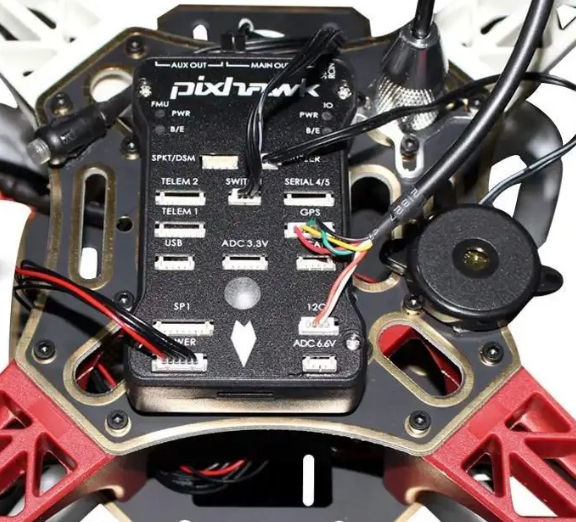
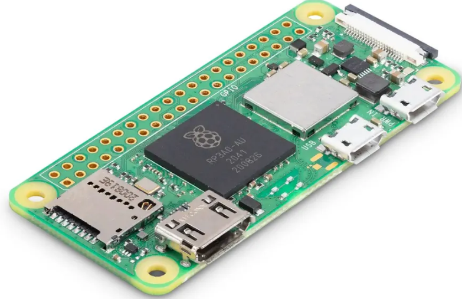
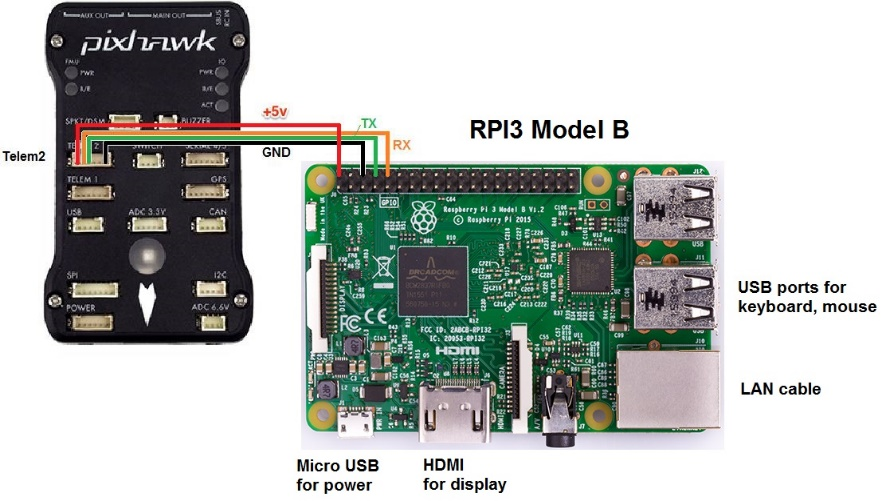
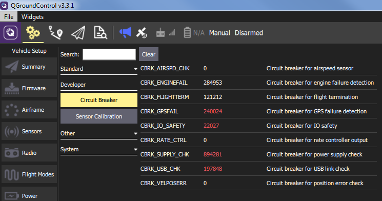

контроллер Pixhawk PX4 PIX 2.4.8 Flight Control NEO - M8N GPS 3DR 500MW 433 МГц Беспроводной телеметрический прибор OSD модуль PPM - 14 433 рублей

Raspberry Pi Zero 2 W (c Wifi и Bluetooth) микрокомпьютер расбери малина - 3285 рублей

Схема подключения Raspberry PI к Pixhawk:
Подключение бортового компьютера к полётному контроллеру возможно двумя способами: по интерфейсу UART через порт telem2, а также
по интерфейсу USB. Ниже описаны оба способа.
Подключение UART осуществляетсся с помощью соединения понов GPIO Raspberry PI с портом telem2 полётного контроллера по следующей
схеме:

Подключение по mavros к полётному контроллеру выполняется с помощью команды:
roslaunch mavros px4.launch fcu_url:= /dev/ttyAMA0:921600
При этом полётный контроллер дрона должен быть настроен и откалиброван, в программе управления QGroundControl не должно выдавать
ошибок, иначе полётный контроллер может не выдавать хартбит по mavros. Лишние проверки можно отключить с помощью специальных
параметров-заглушек (circuit breakers) полётного контроллера:

Также в параметрах ПК должна быть правильно установлена скорость обмена по UART – параметр SYS_COMPANION = 921600 baud, 8N1. Если процесс mavros выдаёт ошибку и падает при запуске – необходимо убедиться, что на Raspberry PI отключена блокировка UART операционной системой (с помощью raspi-config или в конфигурационном файле config.txt).
Запуск моторов осуществляется с помощью команды:
rosservice call /mavros/cmd/arming "value: true"
Остановить моторы можно с помощью команды:
rosservice call /mavros/cmd/arming "value: false"